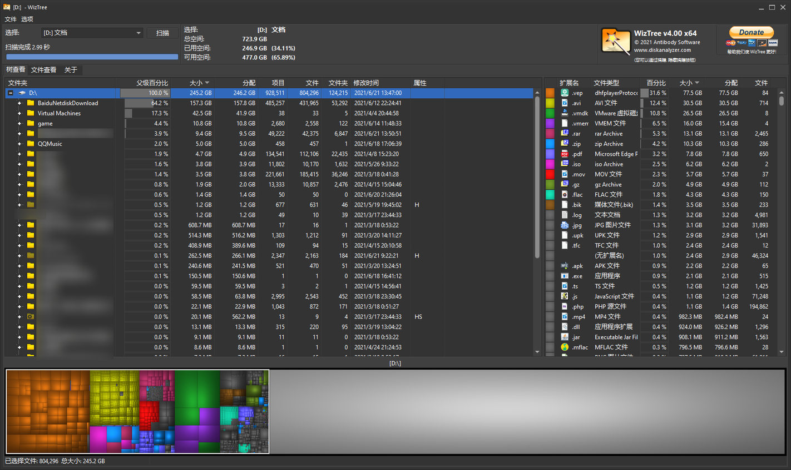

WizTree - 最快的磁盘空间分析器
目录
WizeTree 是一款 Windows 平台下的磁盘空间分析器。
通过可视化（图形化、树形化）的布局，你可以直观地看到在你硬盘上大的文件和文件夹。
内置文件管理器，支持查看文件树、文件夹大小排序、文件类型分析 wiztree 使用 NTFS 文件系统的 MFT 进行文件分析 (与著名的软件 everything 原理相同) 比 spacesniffer 的速度快数十倍，几秒钟就能完成全盘文件大小分析。
官网：https://www.diskanalyzer.com/
预览图
